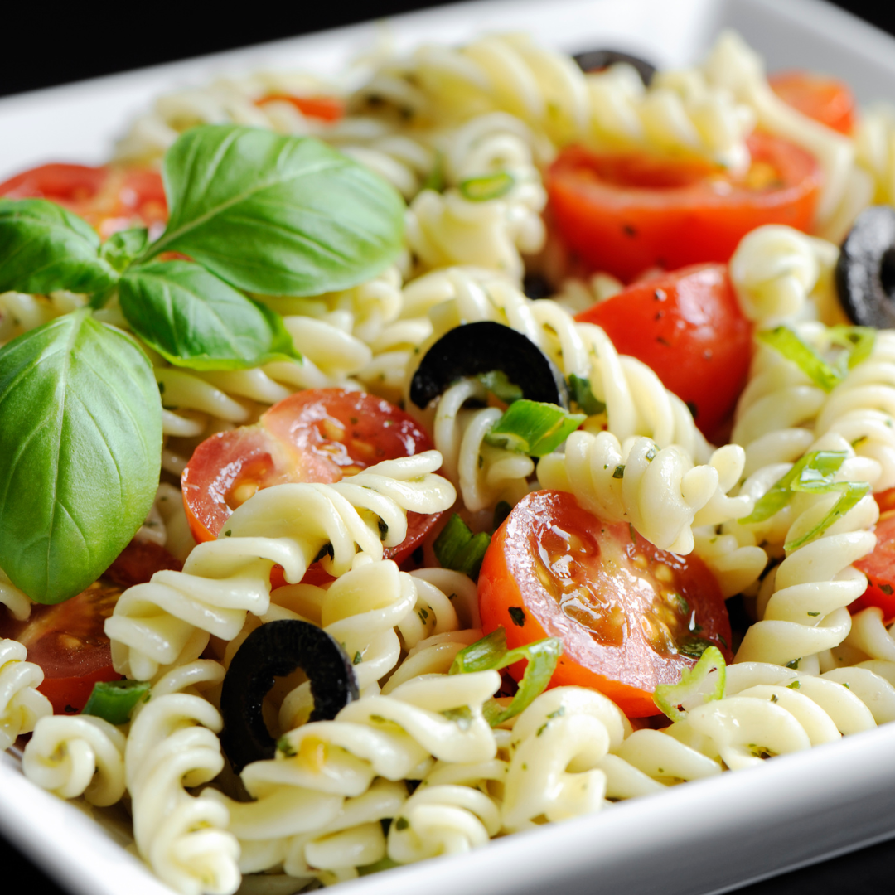

Pasta Salad Recipe

This is a recipe for pasta salad.
Make a tasty pasta salad with this simple recipe.
Gather ingredients and then get cooking.
Ingredients
- 1 cup mozarella cheese
- 1 cup pepperoni
- 1 16" pre-made crust
- 1 cup black olives
- 2 cups tomato sauce
- 1 tbsp olive oil
- 1 tbsp parmesan cheese
- 1 (7 ounce) package elbow macaroni
- 1 pound bacon, diced
- 2 tablespoons lemon juice
- 1 large avocado, diced
- 1/2 cup mayonnaise
- 1/2 cup creamy salad dressing (such as Miracle Whip®)
- 1/3 cup tomato-based chile sauce
- 1/4 cup lemon juice
- 2 teaspoons chicken bouillon granules
- 2 teaspoons white sugar
- 1 large tomato - cored, seeded, and diced
- 1/2 cup sliced green onion tops
- 6 cups shredded lettuce
Steps
- Preheat oven to 450 degrees Farenheit.
- Unwrap and place pre-made crust on baking sheet.
- Spread tomato sauce onto crust, outward from center in a circular motion.
- Add shredded mozarella, pepperoni, olives.
- Place in oven and bake for 10-12 minutes at 450 F.
- Remove from oven, drizzle with olive oil, sprinkle with Parmesan.
- Let cool for 5-10 minutes and Enjoy.